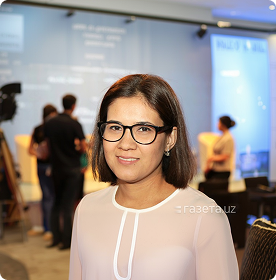

Xumoroy Kamaldjanovna Ashirova — O‘zbekiston ta’lim sohasida yetakchi pedagog-rahbar, hozirda Toshkent shahridagi Prezident maktabining ijrochi direktori sifatida faoliyat yuritmoqda.
Xumoroy Ashirova ta’lim sohasida chuqur bilimga ega professional rahbar sifatida tanilgan. Uning to‘liq aniq diplomlari yoki o‘qigan yillari haqida ochiq manbalarda keng ma’lumot mavjud emas, lekin pedagogik va akademik yo‘nalishda faoliyat yuritgani ma’lum.
U turli xalqaro va mahalliy forumlarda faol ishtirok etgan, xususan “Innovator ayollar: Ko‘plab ovoz — bitta kelajak” kabi tematik yirik anjumanlarda ma’ruzalar qilgan.
